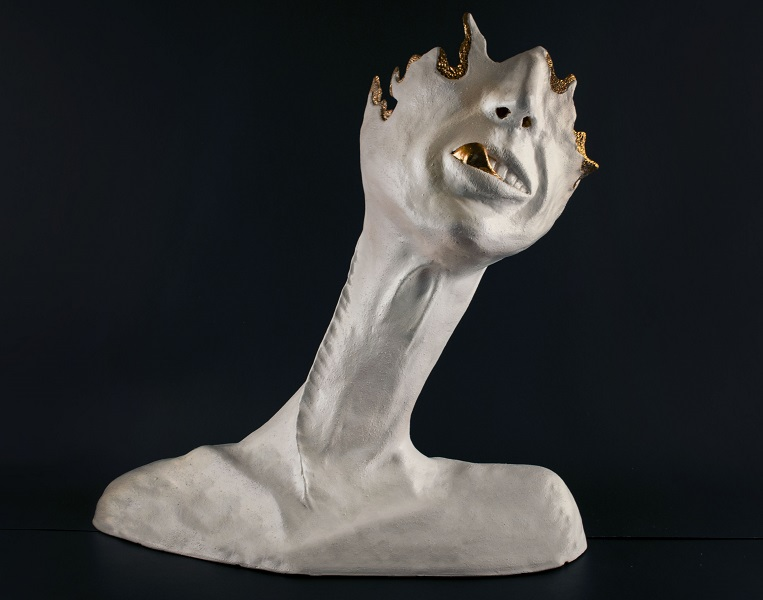
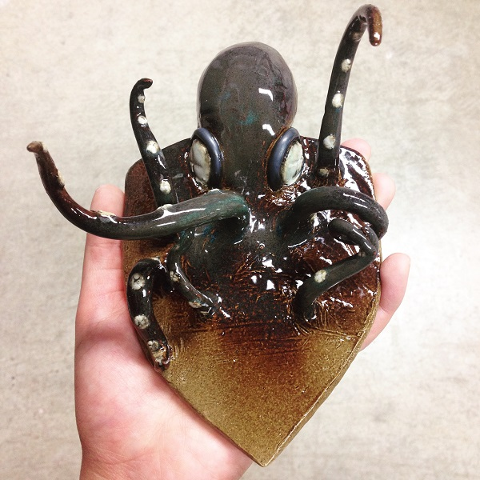
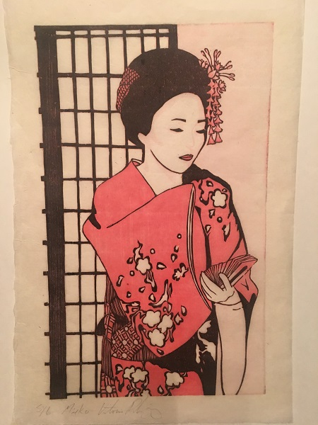

♥ Glassblowing:


I blew glass for 3 semesters in college. Once I started, I was immediately obsessed. It is a very physically exhausting hobby with rewarding results. Glassblowing has allowed me to push myself past my comfort levels. It is a very addictive and time consuming process that requires a lot of attention to detail. Every time I step into a hot shop and work, I learn something new and try to advance my technique. This is one thing I have found in my life that I truly love practicing. Even though I am done with college, I still help my old glassblowing partner with his art shows and get to assist with demonstrations.
♥ Ceramics:
 Ceramics was the first 3D art medium I ever worked with. I initially had a little bit of resistance with clay as I do not like the feeling of dry clay on my hands or clothes. I learned to appreciate clay as it can be used with a lot of flexibility. It allows endless possibilities of what one can create. I have practiced wheel throwing, but I prefer creating sculptural works. One day, I would like to have a wheel and kiln in my future home!
♥ Printmaking:
Printmaking is one of the hobbies I can practice at home without a designated studio space. When I was in college, I had access to a printing presses and acid baths (for etching on copper plates). I no longer have access to the appropriate equipment to do some higher level techniques, but I am able to practice woodblock printing at home. Woodblock printing happens to be my favorite printmaking technique as well, so I am glad I can still practice!
♥ Metalsmithing:


Metalsmithing is another physically exhausting art form. I found it very rewarding to work with, but the physical stress was too much on my wrists to confortably practice further. I still look forward to utilizing some metalsmithing work in future mixed media pieces on a smaller scale.